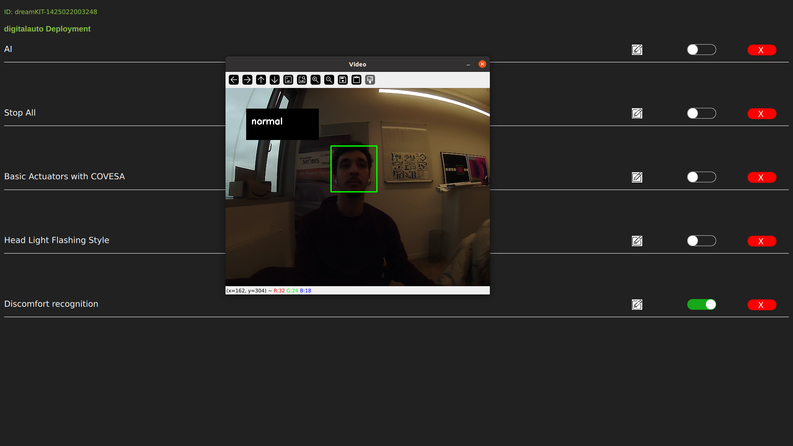

CPU: Quad-core ARM A57 @ 1.43 GHz GPU: 128-core Maxwell Memory: 4 GB 64-bit LPDDR4 URL: https://developer.nvidia.com/embedded/jetson-nano-developer-kit
UPS for Jetson Nano with 4x 3500mAh 18650 Akku
Wi-Fi 5 and Bluetooth 4.2 Module 2.4G/5GHz dual-band WiFi URL: https://www.waveshare.com/wireless-ac8265.htm
2G/3G/4G network connection GNSS connector, supports GPS, Beidou, Glonass, LBS base station positioning URL: https://www.waveshare.com/sim7600g-h-4g-dongle.htm
Size: 128 GB Speed: 130MB/s A2- und V30-Classified
Night Vision USB Camera with IR LEDs 170° fisheye lens 1920 x 1080 at 30 fps; 1280 x 720 at 60 fps; 640 x 480 at 100 fps
USB-Connected 360° omnidirectional audio Mute button Notice-Cancelling
ELM 327
7" HDMI LCD 1024*600 IPS Touchscreen
60- to 64-GHz 4 RX, 3 TX with 120° azimuth FoV and 30° elevation FoV URL: https://www.ti.com/tool/IWR6843ISK
16-bit 6-axis IMU 24-bit absolute barometric pressure sensor 12-bit 3-axis geomagnetic sensor Gas sensor with integrated pressure, humidity, and temperature URL: https://docs.arduino.cc/hardware/nicla-sense-me
Vin: Power Positive (Vin) GND: Negative Power Supply (GND) Vo: analogue output. PWM: PWM. HD: HD (zero for school, low for more than 7 seconds) Rx: TTL level data input for UART (RXD) Tx: TTL data output with UART (TXD) level. Pin 1: Analog Output Vo
Features: Interface specification: 1: CTL: control pin, reserved 2: 1um:> 0.3 micron particle concentration, PWM output. 3: 5 V: 5 V power input. 4: 25um:> 2.5 micron particle concentration, PWM output 5: GND: GND 6: R: Receiver for serial port RX 7:T: Transmission via serial port TXPS: the distance of the interface is 2.54mm
Communication protocol: Serial communication protocol: 9600 8N1 (rate of 9600, data bits 8, parity none, stop bits 1) Communication cycle for series reports: 1 + 0.5 seconds. Data frame (10 bytes): message header + job + data (6 bytes) + checksum + message trailer. The number of bytes: Name: Content 0:Message Head:AA 1: order: c0 2: Data 1: PM2.5 low-byte. 3: Data 2: PM2.5 high byte 4: Data 3: PM10 low-byte. 5: Data 4: PM10 high byte 6: data 5: 0 (reserved) 7: Data 6: 0 (reserved) 8: Checksum: Checksum 9:Message Trailer:AB
Checksum: Data 1 + Data 2 + … + Data 6 PM2.5 data content: PM2.5 (ug / m3) = ((PM2.5 high-byte x 256) + PM2.5 low-byte) / 10. PM10 data content: PM10 (ug / m3) = ((PM10 high-byte x 256) + PM10 low-byte) / 10.
Operating System: Ubuntu 20.04.
Kuksa Databroker is available on localhost: 55555 providing the available Vehicle and Sensor Information as VSS Values.
Velocitas Python SDK is installed on the Jetson Nano. SDV applications can be created using Python templates following the online tutorials: https://eclipse.dev/velocitas/docs/tutorials/vehicle_app_development/python_development/
This documentation provides a step-by-step guide on creating a Discomfort Recognition application using Velocitas Python template and the LandingAI API on a Jetson Nano system.
a. Create a new folder in the Jetson Nano system at the following path:
/usr/bin/dreamkit/prototypes
Use a unique identifier as the folder name.
b. Inside the created folder, add a new Python file named main.py.
a. Locate and edit the prototypes.json file in the following path:
/usr/bin/dreamkit/prototypes
b. Add a new entry for the Discomfort Recognition use case:
{
"id": "YOUR_UNIQUE_IDENTIFIER",
"lastdeploy": "CURRENT_DATE_TIME",
"name": "Discomfort Recognition"
}
Replace YOUR_UNIQUE_IDENTIFIER with the same name as the folder created in Step 1 and update CURRENT_DATE_TIME with the current date and time.
import cv2
import logging as log
import datetime as dt
from time import sleep
from PIL import Image
from landingai.predict import Predictor
import json
# Path to the Haar Cascade file for face detection
cascPath = "haarcascade_frontalface_default.xml"
faceCascade = cv2.CascadeClassifier(cascPath)
# Configure logging
log.basicConfig(filename='webcam.log', level=log.INFO)
# Initialize the video capture from the default camera (camera index 0)
video_capture = cv2.VideoCapture(0)
anterior = 0
font = cv2.FONT_HERSHEY_SIMPLEX
label_name = "normal"
# Enter your LandingAI API Key and Endpoint ID
endpoint_id = "Endpoint_ID"
api_key = "Your_API_KEY"
while True:
if not video_capture.isOpened():
print('Unable to load camera.')
sleep(5)
pass
# Capture frame-by-frame
ret, frame = video_capture.read()
gray = cv2.cvtColor(frame, cv2.COLOR_BGR2GRAY)
# Detect faces in the grayscale frame
faces = faceCascade.detectMultiScale(
gray,
scaleFactor=1.1,
minNeighbors=5,
minSize=(30, 30)
)
# Draw rectangles around detected faces
for (x, y, w, h) in faces:
cv2.rectangle(frame, (x, y), (x+w, y+h), (0, 255, 0), 2)
if anterior != len(faces):
anterior = len(faces)
log.info("faces: " + str(len(faces)) + " at " + str(dt.datetime.now()))
# Capture a new frame
check2, frame2 = video_capture.read()
# Save the current frame as an image
cv2.imwrite(filename='image.png', img=frame2)
# Load the saved image
image = Image.open("image.png")
# Run inference using LandingAI Predictor
predictor = Predictor(endpoint_id, api_key=api_key)
predictions = predictor.predict(image)
# Extract information from predictions
score = predictions[0].score
if predictions[0].label_name:
label_name = predictions[0].label_name
# Draw a black background rectangle for displaying the label
cv2.rectangle(frame, (50, 50), (225, 125), (0, 0, 0), -1)
# Add the predicted label text to the frame
cv2.putText(frame, label_name, (50 + int(125/10), 50 + int(75/2)), cv2.FONT_HERSHEY_SIMPLEX, 0.7, (255, 255, 255), 2)
# Display the resulting frame with live video and predictions
cv2.imshow('Video', frame)
# Check for key presses
key = cv2.waitKey(1)
if key & 0xFF == ord('s'):
# Save the current frame as an image
check, frame = video_capture.read()
cv2.imshow("Capturing", frame)
cv2.imwrite(filename='saved_img.jpg', img=frame)
video_capture.release()
img_new = cv2.imread('saved_img.jpg', cv2.IMREAD_GRAYSCALE)
img_new = cv2.imshow("Captured Image", img_new)
cv2.waitKey(1650)
print("Image Saved")
print("Program End")
cv2.destroyAllWindows()
break
elif key & 0xFF == ord('q'):
# Turn off the camera and exit the program
print("Turning off camera.")
video_capture.release()
print("Camera off.")
print("Program ended.")
cv2.destroyAllWindows()
break

Vehicle.Acceleration.Longitudinal
Vehicle.Acceleration.Lateral
Vehicle.Acceleration.Vertical
Vehicle.AngularVelocity.Roll
Vehicle.AngularVelocity.Pitch
Vehicle.AngularVelocity.Yaw
Vehicle.Cabin.HVAC.AmbientAirTemperature